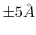

Next, a number of loop models are generated from loopmodel.loop.starting_model to loopmodel.loop.ending_model. Each takes the initial loop conformation and randomizes it by  in each of the Cartesian directions. The model is then optimized thoroughly twice, firstly considering only the loop atoms and secondly with these atoms ``feeling'' the rest of the system. The loop optimization relies on an atomistic distance-dependent statistical potential of mean force for nonbond interactions [Melo & Feytmans, 1997]. This classifies all amino acid atoms into one of 40 atom classes (as defined in $LIB/atmcls-melo.lib) and applies a potential as MODELLER cubic spline restraints (as defined in $LIB/melo-dist1.lib). No homology-derived restraints are used during this procedure. Each loop model is written out with the .BL extension.
For more information, please consult the loop modeling paper [Fiser et al., 2000] or look at the loop modeling class itself in modlib/modeller/automodel/loopmodel.py.